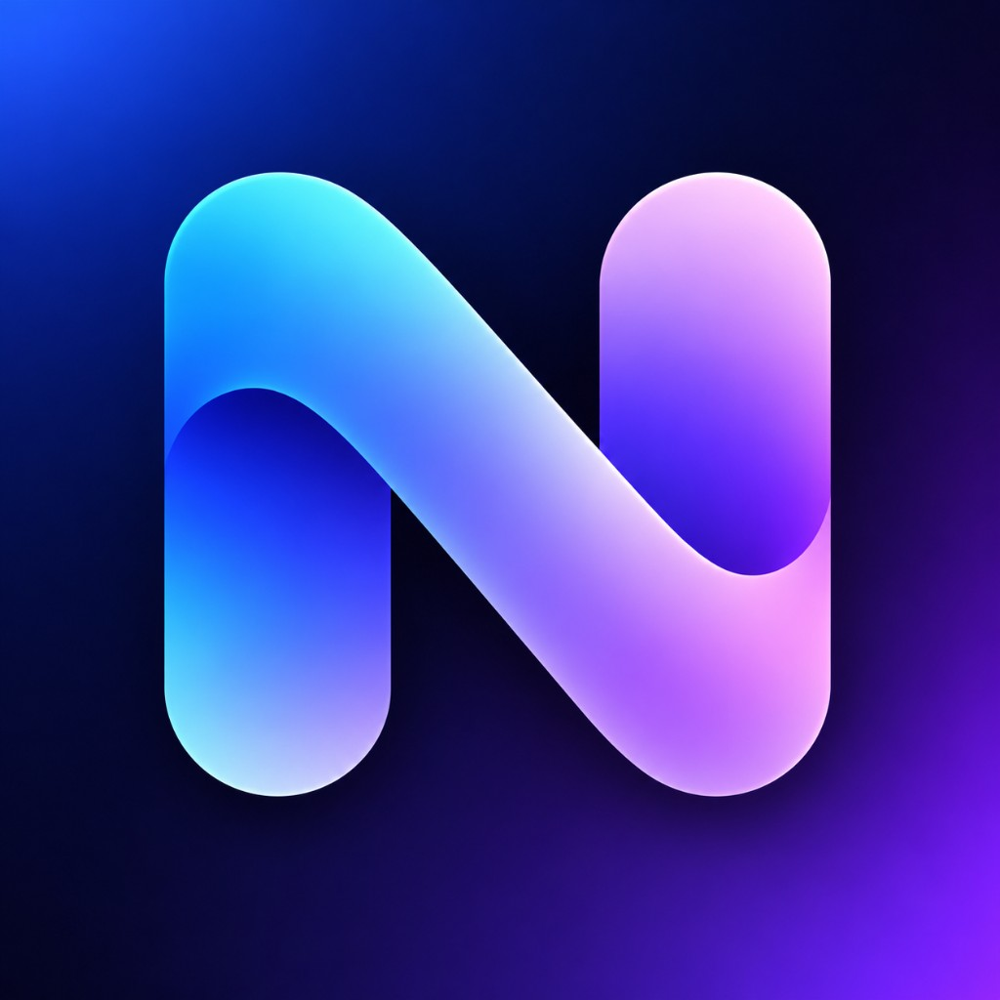
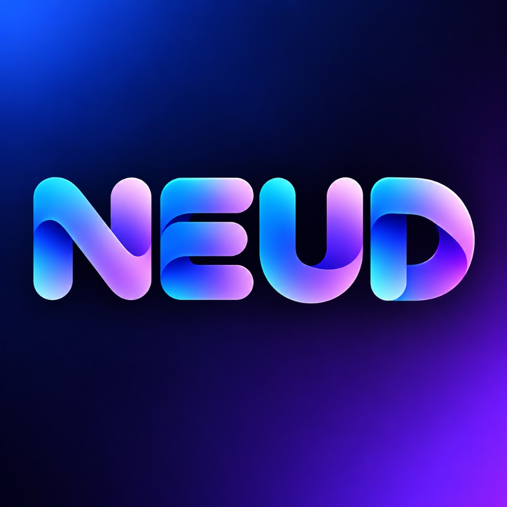

NEUD should feel like professional broadcast technology that has moved beyond traditional broadcast software: powerful, technical, and modern — but visually approachable.
Two complementary marks form the NEUD identity system: the stylized N icon and the full wordmark.
N Icon — Primary application and product symbol.

NEUD Wordmark — Full brand lockup for broader surfaces.
Wordmark intended for
Use only these official treatments. Prefer gradient marks on dark surfaces; use white or black monochrome when contrast or reproduction requires it.
Deep navy anchors the system. Spectrum colors illuminate data, selection, and brand moments.
The gradient should feel continuous and luminous rather than like visible color bands. It is the signature expression of data flowing through NEUD.
Primary gradient
Horizontal continuum
Diagonal — Preferred for ribbons and hero accents.
Atmospheric dark gradient
Electric Blue illumination → Midnight → Violet illumination
The gradient is a brand element, not decoration. Deploy it where data, selection, or brand emphasis matters.
Use restrained gradient accents that point attention to brand, data, or selection.
Cover the entire application interface in gradients.
Primary typeface
Use for app UI, website, documentation, forms, tables, settings, and marketing copy.
Display treatment: Inter / Inter Display — 600 or 700 for large headlines and covers.
Technical typeface
JSON, URLs, IDs, diagnostics, code, and technical values.
Avoid futuristic novelty fonts. Personality belongs to the mark — not the typeface.
A restrained scale keeps operational UI clear while preserving brand presence on larger surfaces.
NEUD’s interface should belong to the same world as the logo without reproducing the full dimensional logo treatment everywhere.
Sample branded UI card — tonal depth, subtle border, operational hierarchy.
Brand color and operational color serve different jobs. Never confuse them.
Primary: bright controlled blue or blue-violet · Secondary: dark surface with subtle border · Destructive: traditional red
Green. Engines running, connections healthy, outputs live.
Yellow. Changed, unsaved, pending, or attention required.
Red. Failures, destructive actions, critical stop states.
Spectrum. NEUD identity, data emphasis, selected states.
Animations should suggest data moving through a pipeline — smooth, fast, purposeful, continuous.
UI interactions
Buttons, panels, toggles, focus changes.
Branded transitions
Splash, publish moments, large reveals.
Motion characteristics
Avoid
A secondary brand device derived from the geometry of the N. A thick, rounded gradient ribbon that visually represents information flowing through the NEUD ecosystem.
Use cases
Also suited for
Icon style
Photography should emphasize
Also: cameras, graphics operators, real data-driven production environments. Avoid generic corporate technology stock imagery.
Maintain approximately half the width/height of the N’s main stroke around the logo as clear space. Keep the area free of type, UI chrome, and competing graphics.
Never
Tone: direct, technical, confident, concise.
Connected to Zoom
“Great news! NEUD has successfully established a connection with your Zoom account!”
Publishing display…
“Please wait while we publish your display.”
Naming conventions — Always write NEUD in uppercase.
Avoid overly corporate constructions such as “NEUD™ Graphics Management Solution Platform.”
Primary identity
Personality tagline
This tagline may be used selectively and does not need to be permanently attached to the logo.
Supporting professional messaging
Documentation — Use white or dark logo treatments depending on background. Prefer the gradient mark on dark pages; use black monochrome on light print pages.
The rounded flowing N, dark midnight environment, and cyan → blue → lavender → violet/pink spectrum define the core NEUD visual identity.